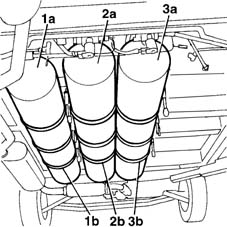
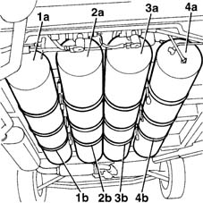
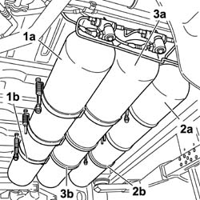

1042A16 CNG CYLINDER UNIT - R R
- Path
- Procedures > 10 ENGINE UNIT > 1042 METHANE GAS CANNISTER AND TUBES > 1042A METHANE GAS CANNISTER AND TUBES FOR RE-CHARGING > 1042A16 CNG CYLINDER UNIT - R R
- Kind
- repair procedure (removal / refitting; the operation number is the code)
- Applies to
- engines: 1.6 16v; all production periods
- Interactive page
- https://sloeber94.github.io/elrnDB-fMltpl/en/#/2891460
Applies to: engines: 1.6 16v; production: fino a 05/04; only with equipment: BIPOWER
 Removing
Removing
 Refitting
RefittingPlace the car on a ramp.
Disconnect the battery negative terminal.
Op. 1042E60 CNG CYLINDER UNIT PROTECTION SEAL - R R
1. Starting on the left hand side, number the outer canister with the number (1a) and the securing collars with the number (1b).
2. Number the left inner canister with the number (2a) and the securing collars with the number (2b).
3. Number the right inner canister with the number (3a) and the securing collars with the number (3b).
This operation makes it possible to avoid any problems when refitting the CNG system canisters and correctly position the securing collars because they are not interchangeable.

Applies to: engines: 1.6 16v; production: fino a 05/04; only with equipment: BIPOWER
Op. 1042A17 SIDE CYLINDER (1), LH OR RH OF CNG CYLINDER UNIT - R R
Op. 1042A18 SIDE CYLINDER (1), LH OR RH OF CNG CYLINDER UNIT - R R
on both canisters
Applies to: engines: 1.6 16v; production: fino a 05/04; only with equipment: BIPOWER
Refitting
RemovingOp. 1042A18 SIDE CYLINDER (1), LH OR RH OF CNG CYLINDER UNIT - R R
on both canisters
Op. 1042A17 SIDE CYLINDER (1), LH OR RH OF CNG CYLINDER UNIT - R R
Applies to: engines: 1.6 16v; production: fino a 05/04; only with equipment: BLUPOWER
Removing
RefittingPlace the car on a ramp.
Disconnect the battery negative terminal.
Op. 1042E60 CNG CYLINDER UNIT PROTECTION SEAL - R R
1. Starting from the left, number the outer canister witht he number (1a) and the securing collars with the number (1b).
2. Number the left inner canister with the number (2a) and the securing collars with the number (2b).
3. Number the right inner canister with the number (3a) and the securing collars with the number (3b).
4. Number the right outer canister with the number (4a) and the securing collars with the number (4b).
This operation makes it possible to avoid any problems when refitting the CNG system canisters and correctly position the securing collars because they are not interchangeable.

Applies to: engines: 1.6 16v; production: fino a 05/04; only with equipment: BLUPOWER
Op. 1042A17 SIDE CYLINDER (1), LH OR RH OF CNG CYLINDER UNIT - R R
on both canisters
Op. 1042A18 SIDE CYLINDER (1), LH OR RH OF CNG CYLINDER UNIT - R R
on both canisters
Applies to: engines: 1.6 16v; production: fino a 05/04; only with equipment: BLUPOWER
Refitting
RemovingOp. 1042A18 SIDE CYLINDER (1), LH OR RH OF CNG CYLINDER UNIT - R R
on both canisters
Op. 1042A17 SIDE CYLINDER (1), LH OR RH OF CNG CYLINDER UNIT - R R
on both canisters
Applies to: engines: 1.6 16v; production: da 06/04; only with equipment: BIPOWER
Removing
RefittingPosition the vehicle on a lift.
Proceed with draining the high pressure circuit following the instructions in the specific operation
Op. 1042A02 C.N.G. - FUEL SYSTEM SAFETY CHECK
Op. 1042E60 CNG CYLINDER UNIT PROTECTION SEAL - R R
1. Starting from the left side, number the outer cylinder with the number (1a) and the fastening strips with the number (1b).
2. Number the outer cylinder on the right side with the number (2a) and the fastening strips with the numbers (2b)
3. Number the central cylinder with the number (3a) and the fastening strips with the numbers (3b)
This operation avoids problems with installing the CNG system cylinders and correct positioning of the fastening strips because they are not interchangeable.

Applies to: engines: 1.6 16v; production: da 06/04; only with equipment: BIPOWER
Op. 1042A70 LEFT CYLINDER OF CNG CYLINDER UNIT R R
Op. 1042A74 RIGHT CYLINDER OF CNG CYLINDER UNIT R R
Applies to: engines: 1.6 16v; production: da 06/04; only with equipment: BIPOWER
Refitting
RemovingOp. 1042A72 CENTRAL CYLINDER OF CNG CYLINDER UNIT R R
Op. 1042A74 RIGHT CYLINDER OF CNG CYLINDER UNIT R R
Op. 1042A70 LEFT CYLINDER OF CNG CYLINDER UNIT R R
Move the CNG cut-off solenoids to open position by hand and check system is efficient.
Op. 1042A06 C.N.G. - FUEL SYSTEM CHECK FOR ANY LEAKS USING ELECTRONIC DETECTOR FOLLOWING OPERATIONS
Topics linked from this page (9)
- 1042A02 C.N.G. - FUEL SYSTEM SAFETY CHECK
- 1042A06 C.N.G. - FUEL SYSTEM CHECK FOR ANY LEAKS USING ELECTRONIC DETECTOR FOLLOWING OPERATIONS
- 1042A17 (One), side CANISTER left or right, for CNG CANISTER ASSEMBLY - R.R.
- 1042A18 (One), centre CANISTER left or right, for CNG CANISTER ASSEMBLY - R.R.
- 1042A20 INJECTION SYSTEM SOLENOID ON CYLINDER R R
- 1042A70 LEFT CYLINDER OF CNG CYLINDER UNIT R R
- 1042A72 CENTRAL CYLINDER OF CNG CYLINDER UNIT R R
- 1042A74 RIGHT CYLINDER OF CNG CYLINDER UNIT R R
- 1042E60 CNG CANISTER ASSEMBLY SHIELD/PROTECTION / - R.R.